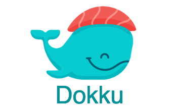

Docker Meetup Córdoba / Abril 2018
Dokku
mini-Heroku en tu propia infraestructura
por Gonzalo Matheu
Qué es Dokku?
mini-Heroku basado en Docker. The smallest PaaS implementation you've ever seen.
The smallest PaaS implementation you've ever seen?
100 líneas en Bash
500 líneas en Bash
37000 líneas en Bash
PaaS: Platform as a Service
permite ejecutar y gestionar aplicaciones abstrayendo infraestructura y procesos de despliegue.
 Heroku
Heroku
Heroku is a cloud platform that lets companies build, deliver, monitor and scale apps — we're the fastest way to go from idea to URL, bypassing all those infrastructure headaches.
Heroku: Lo Bueno
- Push to deploy
git push heroku masterRuby, Go, Python, Java, NodeJs...Heroku: No Tan Bueno
- Escalar es caro
Varios procesos + Base de datos + SSL ~30 USDDokku
Arquitectura
Docker Herokuish sshcommand gitreceive nginxBuildpacks
Plugins
Cuando usar
No critico No grande escala Single host deploys (maybe docker swarm)Proyectos Relacionados
sshcommand herokuish gitreceive plugnAlternativas

Deis
+ KubernetesFlynn
+ Custom containersTsuru
Cerrando...
- Heroku tiene un modelo de deploy poderoso y sencillo
- Dokku imita gran parte de las funcionalidades de Heroku (deploy)
- Varios proyectos spin-off de Dokku: sshcommand, buildstep/herokuish
- Dokku para escenarios pequeños/no críticos
Preguntas?

Gracias!
@gmatheu en Twitter, Github